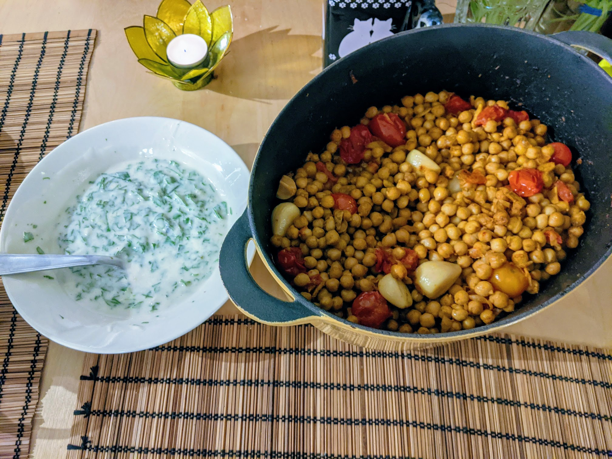

Pois chiches confits

Pour 3 personnes :
- Deux bocaux de pois chiches (de 400g chaque)
- Deux têtes d'ail (oui)
- 40g de gingembre frais
- 400g de tomates cerises
- Un piment rouge
- Une cuillère à soupe de concentré de tomates
- Une cuillère à soupe de graines de cumin
- Une cuillère à soupe de graines de coriandre
- Une cuillère à café de curcuma
- Une cuillère à café de sucre
- 200mL d'huile d'olive, voire un peu plus (oui)
- Un yaourt (de 200g environ)
- Un bouquet de coriandre
- Un petit bouquet de menthe
- Un citron vert
- Faire toaster les graines de cumin et de coriandre dans une poêle anti-adhésive jusqu'à que ça sente bon.
- Pendant ce temps, égoutter les pois chiches, éplucher et couper le gingembre en petits bâtons, éplucher l'ail, laver les tomates cerises, couper le piment en petites tranches, et une fois que les épices sont toastées, les moudre au pilon.
- Faire préchauffer le four à 150°C. Mélanger légumes, épices et huile d'olive (il faut que tout touche au moins partiellement l'huile d'olive) dans une cocotte en fonte, ou un autre récipient à forte capacité thermique. Cette précision est importante, ça ne marche pas bien avec un plat qui ne garde pas bien la chaleur. Enfourner deux heures à couvert.
- Durant la dernière demi-heure de cuisson, laver et mixer les herbes, ou les hacher en tout petit. Les mélanger au yaourt, presser le citron vert sur le tout, remélanger.
- Servir chaud avec la sauce pour accompagner, et du bon pain pita.
Retour à la liste des recettes